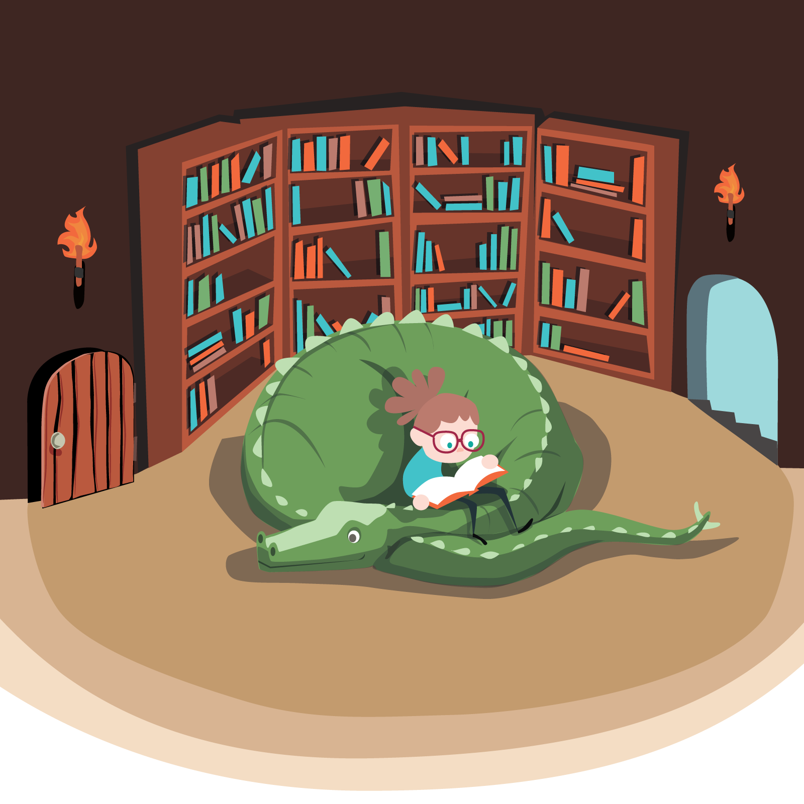

“ Nicole reads across learning science, disability, and systems thinking so she can design for everyone.
A robust background is what allows her to challenge assumptions and make evidence-based design trade-offs. ”
The Reading Behind the Design
Good design requires a foundation. These are the bricks.
Learning Science & Design
How people actually learn, and the frameworks behind effective instruction.


1
book every 12 days
244 books over 7 years of self-directed study.
Disability, Neurodiversity & Access
The social model of disability, neurodiversity-affirming practice, and the politics of mental health.
My approach aligns with Universal Design for Learning: designing for variability from the start, not retrofitting for accommodations.


Trauma & the Learning Brain
How trauma affects memory, attention, and engagement, and how to design for safety and pacing.


The Shape of the Study
Gender & Identity (for inclusive design)
Gender, identity, and belonging as design constraints, not afterthoughts.


The Comeback Curve
In 2022, my reading dropped to 12 books during my hardest health year. I used reading to rebuild my focus and stamina. By 2025, I was reading 52 books a year—and I'm already at 50+ in 2026.
Systems Thinking & Critical Analysis
Why systems produce the problems they do, and how to design training that addresses root causes instead of symptoms.